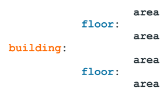
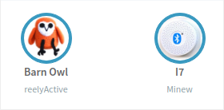

Associations
Metadata associated with devices in Pareto
Each radio-identifiable device may be associated with any or all of the following properties:
- a Directory to facilitate hierarchical organisation
- Tags to facilitate classification
- a Position to facilitate location/positioning
- a URL to link with the semantic web
Detailed information on each property is presented below.
Directory
A hierarchical structure which specifies the semantic location of a place
Each receiver should be associated with a directory. The directory concept is similar to that used in computing: a hierarchy of sub-directories branches out in a tree-like structure.
The first level of hierarchy is called the root. Each level in the directory hierarchy is separated by a colon (:). For instance, consider organising a building (root) as a hierarchy of floors and areas:
Such a hierarchy facilitates elegant application-level filtering such as:
- the entire building
- the nth floor of the building
- only the nth floor conference room
The association of directories with receivers is managed in the Points of Interest View. The Dashboard View is organised around the root directory, and several Embedded Apps permit filtering by directory. The Contextual API accepts queries by directory.
POI View Dashboard View Embedded Apps Contextual API
Tags
A set of strings which classify the device
Each device may be associated with one or more tags. The tag concept is similar to that of a label on a product: a set of classifiers.
Each tag is a string, and the set of tags is contained in an array. The following is an example of tags which might be associated with a fixed infrastructure device in a conference room:
[ 'conference room', 'capacity=10', 'hasProjector' ]
and the following is an example of tags which might be associated with a device representing an office chair:
[ 'chair', 'colour=blue', 'hasWheels' ]
Such classification using tags facilitates elegant application-level filtering such as:
- conference rooms (throughout the building)
- chairs (throughout the building)
- conference rooms with a projector that can fit 7 occupants and have only blue wheeled chairs
The association of tags with devices is managed in the Points of Interest View and the People and Things View. Several Embedded Apps use tags. The Contextual API accepts queries by tags.
POI View PAT View Embedded Apps Contextual API
Position
A set of coordinates representing a specific location
Each device may be associated with a position. A position is either absolute geocoordinates or an offset from an arbitrary origin, and can be represented in two or three dimensions.
Each position is a GeoJSON coordinates array. The following is an example of the position of reelyActive's first office at Notman House, interpreted as 73.57008° West, 45.51193° North:
[ -73.57008, 45.51193 ]
The altitude could be included as a third parameter (ex: in meters), or alternatively, could be included as a floor number. For example, to specify that the office is on the 1st floor:
[ -73.57008, 45.51193, 1 ]
The Embedded Apps observe the convention above, however any valid convention may be used to suit the target application(s).
The WebSocket API will include both a position and positioningMethod value if one of the following two conditions is met, in order of precedence:
| Condition | position | positioningMethod |
|---|---|---|
| Decoded device has associated position | Position associated with decoded device | fixedReference |
| Strongest receiver has associated position | Position associated with strongest receiver | strongestReceiver |
The association of positions with devices is managed in the Points of Interest View and the People and Things View.
POI View PAT View Embedded Apps WebSocket API
URL
A link to information in the form of JSON-LD and Schema.org
Each device may be associated with a URL, better known as a web address. The URL references human and/or machine-readable information associated with the device.
Pareto and its Embedded Apps recognise such machine-readable information in the form of JSON-LD and Schema.org. For instance, the image and caption associated with each "bubble" in Pareto, as illustrated below, is based on such information, retrieved from a URL.
To facilitate testing and demos, a selection of place, product and people URLs are maintained at www.reelyactive.com/stories/ and include:
| Example | URL | JSON-LD & Schema.org |
|---|---|---|
| Office | https://www.reelyactive.com/stories/office/ | Fetch with cormorant.js |
| Atrium | https://www.reelyactive.com/stories/atrium/ | Fetch with cormorant.js |
| Chair | https://www.reelyactive.com/stories/chair/ | Fetch with cormorant.js |
| Mi Band | https://www.reelyactive.com/stories/mi-band/ | Fetch with cormorant.js |
| barnowl mascot | https://www.reelyactive.com/stories/barnowl/ | Fetch with cormorant.js |
The association of URLs with devices is managed in the Points of Interest View and the People and Things View.
POI View PAT View Embedded Apps